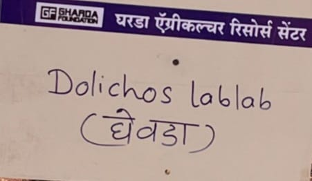
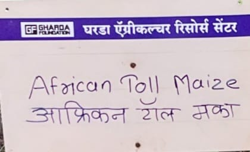
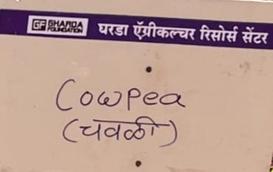
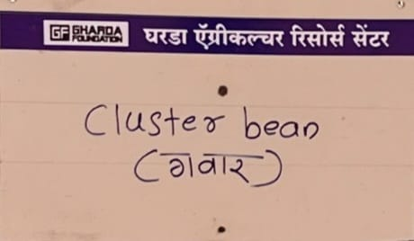
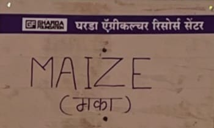
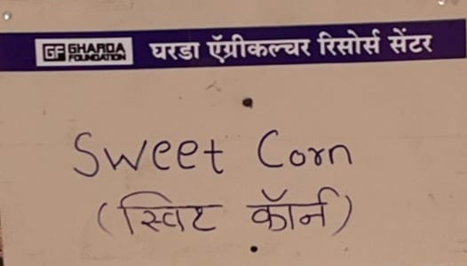

Crop farming is the cultivation of plants for food, fiber, and income. It plays a major role in agriculture and supports farmers' livelihoods.

Nutritious pulse crop used for food and fodder.

High-yield maize variety used for grain and fodder.

Protein-rich legume widely grown in dry regions.

Used for guar gum production and animal feed.

Important cereal crop used for food and industry.

Popular variety of maize consumed as food, rich in sugar and nutrients.